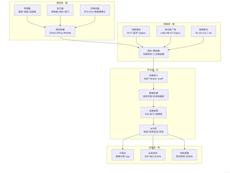
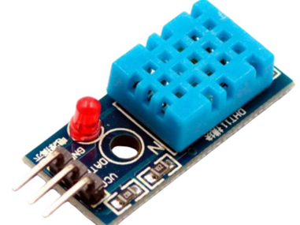
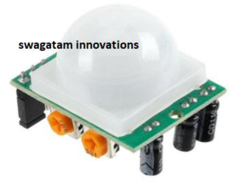
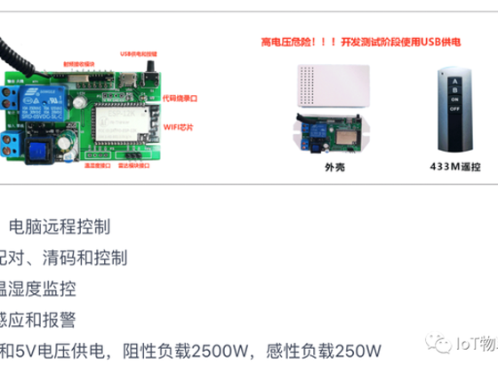

Exercise 6: IoT and Interaction
View your assignment
Analysis of IoT Operation Process and Practical Application Case
1. Analysis of IoT Operation Process Based on the Diagram
This diagram illustrates a typical four-layer IoT architecture, which also serves as the underlying supporting framework for Industry 4.0. The complete top-down operation logic is as follows:

1.1 Bottom Layer: Physical World & End Users (Things World + Customers)
This is the data source of the entire IoT system, covering physical devices, daily scenarios, ordinary users and real environments.
• Input: Industrial know-how (product operation logic, residents' living demands, equipment maintenance experience), which guides sensor layout and data collection standards.
• Output: Physical signals such as temperature, human motion, power consumption and user operations, which are transmitted upward to the hardware sensing layer.
1.2 Hardware Sensing Layer: Sensors + Controllers
This layer acts as the "sense organs and limbs" of IoT.
• Sensors collect raw physical data including temperature & humidity, human body induction, power consumption, button operations and door/window status.
• Controllers conduct local preliminary judgment and data filtering to eliminate invalid information.
• Two-way interaction: It receives control commands from the cloud to manipulate physical devices, and uploads standardized data to communication modules.


1.3 Transmission Layer: Communication Module
This is the data transmission channel of IoT, enabling bidirectional data exchange:
• Uplink: Data collected by sensors is uploaded to the cloud via Wi-Fi, Bluetooth, 4G or 5G.
• Downlink: Control commands (power on/off, mode adjustment, timing setting, etc.) issued by the cloud are sent back to controllers to realize remote control.
It works as the intermediate hub connecting end hardware and cloud software.
